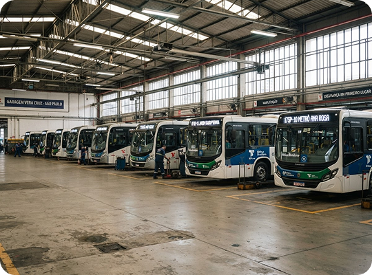

DATABUS
INTELIGÊNCIA PARA O TRANSPORTE URBANO
O DataBus monitora a ocupação por linha e horário
para apoiar decisões de redistribuição da frota
e redução de custos operacionais.
O CENÁRIO
Segundo o Anuário 2025 da NTU, o transporte público coletivo urbano tem escala essencial — e custos que exigem decisões cada vez mais eficientes.
de passageiros diariamente
dos trabalhadores atendidos
veículos na frota
por ano em custos

O DESAFIO
Quando a operação não acompanha a demanda real, o desperdício aparece dos dois lados.
A SOLUÇÃO
Uma camada simples de inteligência para apoiar decisões diárias, sem complicar a rotina da equipe.
Visualize demanda e ocupação para planejar com confiança.
Ajuste veículos e frequências ao movimento de cada linha.
Evite viagens ociosas, desperdício de diesel e perdas operacionais.
COMO FUNCIONA
Registra os dados de entrada dos passageiros.
Compara a ocupação por linha ao longo da operação.
Entrega informações claras para apoiar o gestor.
Equilibrar oferta e demanda para tornar a operação mais eficiente e sustentável.
Menos desperdício, melhor experiência para o passageiro e maior previsibilidade financeira.
Dados simples e acionáveis para transformar ocupação em economia e qualidade.
Use dados básicos da sua frota em uma simulação demonstrativa.
QUEM SOMOS
Ajudar operadores a oferecer transporte urbano mais eficiente e acessível.
Ser referência em inteligência simples para a mobilidade coletiva.
Confiabilidade, clareza, responsabilidade, inovação útil e foco nas pessoas.